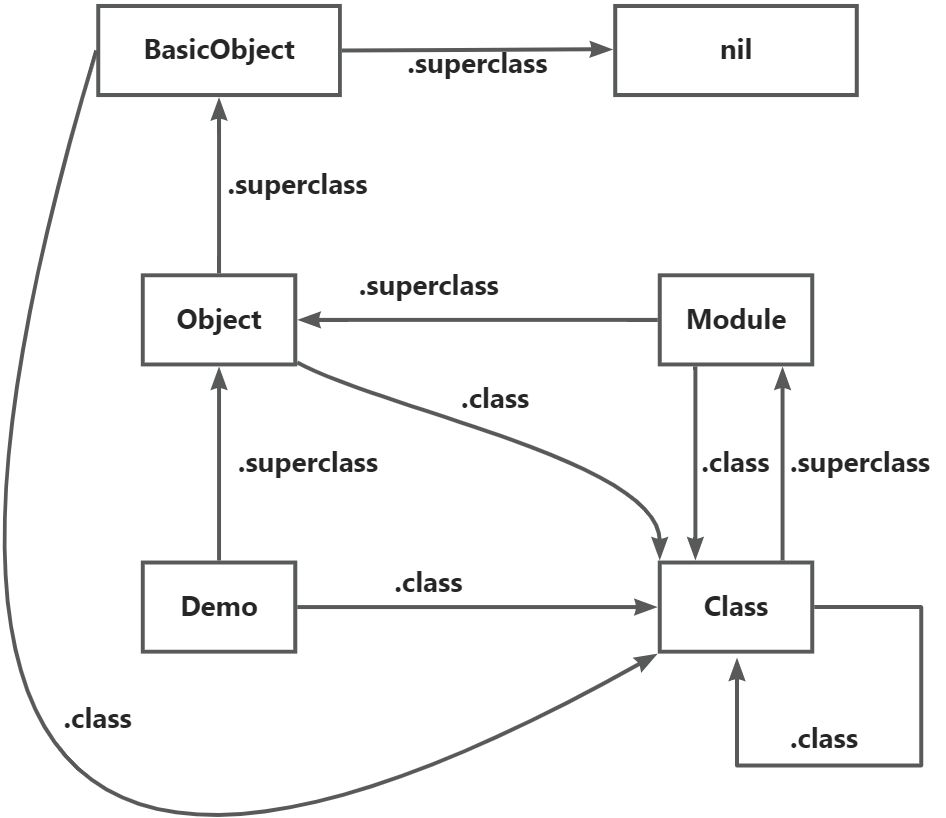

Effective Ruby
熟悉Ruby
第一条：ruby中的True与False
- 在Ruby中，除了
false和nil，其他值都为true，包括数字0 true和false并不是关键字，而是一个全局常量但不遵守命名规范和赋值规范- 不遵守命名规范是因为，它没有以
$开头 - 不遵守赋值规范是因为，无法写
ture = something true.class => TrueClassfalse.class => FalseClass- 既然不是关键字，true和false就有着对象方法
- 不遵守命名规范是因为，它没有以
- 如
false和nil都代表false，那我们怎么进行区分？- 这一点在表示配置信息对象中会贯穿始终，因为false一般代表禁用，nil代表未赋值，使用默认值等。
- 最简单的方式是 obj.nil? 判断是否为nil
- 还可以使用 false == obj 来进行判断，在一般常规语言中，我们倾向于把不变量放到左边，但这里我们有着功能性上的考虑，因为false是一个对象，而FalseClass定义了
==方法，也就是说这里实际执行为 false.==(obj)。这也太牛逼了。比如一个类也定义了==方法，则可能就会出现混乱的样子，比如：class Bad def == (other) true end end false == Bad.new # => false Bad.new == false # => true从上面的例子中，我们可以看到方法名可以定义为
==，那是否==本身就不是一个关键词，而是每个对象继承Object#== 方法，然后每个类可以自己重新判断？
确实是这样的，比如integer和string类都重写了 == 方法
这里需要注意：string类型并没有缓存，因为string是可变的，所以 “a”.object_id 每次执行都是不同的
integer则带有缓存，1000.object_id每次执行都是一致的。
Object#== 方法默认比较的什么？
比较的是两个值的引用是否一致，而看引用是否一致，就看 Object#object_id是否一致
需要注意类重写 == 方法的问题，根据上下文进行判断。
Ruby中如果定义了一个同名方法和一个同名变量会怎么区分？
变量的优先级更高
irb(main):074:1* def name
irb(main):075:1* "这是一个方法"
irb(main):076:0> end
=> :name
irb(main):077:0> name = "这是一个局部变量"
=> "这是一个局部变量"
irb(main):078:0> name
=> "这是一个局部变量"
irb(main):079:0> name()
=> "这是一个方法"第二条：所有对象的值都可能为 nil
在Ruby中有一个特点，就是鸭子类型(duck typing)，不同于静态语言的强制校验，比如为某个类的实例，某个接口的实例，Ruby更关注这个对象能做什么，如果它能嘎嘎叫，那它就是一个鸭子，这也就是接口高于类型，而鸭子类型也就意味着相比 is_a? 方法，我们更喜欢 respond_to? 方法，不过我们也很少用 respond_to? 而是直接调用目标方法，如果没有这个方法，则触发NoMethodError异常。这也就需要我们使用大量的测试来保证安全。但即便是通过测试，到正式环境中，我们也会发现问题：undefined method 'fubar' for nil:NilClass(NoMethodError)
又是臭名昭著的空指针问题，在写Java时，我们最常见的一个异常就是空指针问题，比如方法的调用者为nil，方法的入参为nil，方法的返回值为nil，这都是很难避免的。
作为检验是否为nil，最方便的方法就是nil?方法，当然nil在boolean上下文中，总是fales，所以下面的代码都是等价的
person.save if person
person.save if !person.nil?
person.save unless person.nil?将变量显式转为期望类型，比时刻担心nil要容易得多，尤其是在即使输出为nil，也应该产生结果的情况。这里Object定义的几个转化方法就能用上了：
irb(main):069:0> 13.to_s
=> "13"
irb(main):070:0> nil.to_s
=> ""
irb(main):071:0> nil.to_a
=> []
irb(main):072:0> nil.to_i
=> 0
irb(main):073:0> nil.to_f
=> 0.0如果有多个值，则可以考虑Array提供优雅的方式，Array#compact去掉所有nil，并返回副本
irb(main):080:0> name = ["a","b",nil].compact.join(" ")
=> "a b"
irb(main):081:0> name = ["a","b",nil].compact
=> ["a", "b"]
irb(main):082:0> name = ["a","b",nil].compact.join("")
=> "ab"第四条：留神，常量是可变的
总是将常量冻结，以防止被改变，虽然已大写字母开头代表为常量，但Ruby并不禁止修改常亮，所以需要冻结freeze
irb(main):001:0> Name = "Tome" => "Tome" irb(main):002:0> Name.concat("bye") => "Tomebye" irb(main):003:0> Name.freeze => "Tomebye" irb(main):004:0> Name.concat("bye") (irb):4:in `concat': can't modify frozen String: "Tomebye" (FrozenError) from (irb):4:in `<main>' from /opt/homebrew/lib/ruby/gems/3.2.0/gems/irb-1.7.4/exe/irb:9:in `<top (required)>' from /opt/homebrew/opt/ruby/bin/irb:25:in `load' from /opt/homebrew/opt/ruby/bin/irb:25:in `<main>'如果常量引用一个集合对象比如数组或散列，那么需要冻结集合以及所有元素
错误：
irb(main):005:0> arr = ["a","b"]
=> ["a", "b"]
irb(main):006:0> arr.freeze
=> ["a", "b"]
irb(main):007:0> arr << "c"
(irb):7:in `<main>': can't modify frozen Array: ["a", "b"] (FrozenError)
from /opt/homebrew/lib/ruby/gems/3.2.0/gems/irb-1.7.4/exe/irb:9:in `<top (required)>'
from /opt/homebrew/opt/ruby/bin/irb:25:in `load'
from /opt/homebrew/opt/ruby/bin/irb:25:in `<main>'
irb(main):008:0> tmp = arr[0]
=> "a"
irb(main):009:0> tmp.concat "b"
=> "ab"
irb(main):010:0> arr
=> ["ab", "b"]正确：
irb(main):001:0> arr = ["a","b"]
=> ["a", "b"]
irb(main):002:0> arr.map!(&:freeze).freeze
=> ["a", "b"]
irb(main):003:0> tmp = arr[0]
=> "a"
irb(main):004:0> tmp.frozen?
=> true要防止常量被重新赋值，可以冻结定义它的模块儿或类（需要注意的一点，类名，模块儿名本质上就是一个常量）
irb(main):011:1* class Base irb(main):012:1* Name = "Tom" irb(main):013:0> end => "Tom" irb(main):014:0> Base.freeze => Base irb(main):015:1* class Base irb(main):016:1* Name = "Jack" irb(main):017:0> end (irb):16:in `<class:Base>': can't modify frozen #<Class:Base>: Base (FrozenError) from (irb):15:in `<main>' from /opt/homebrew/lib/ruby/gems/3.2.0/gems/irb-1.7.4/exe/irb:9:in `<top (required)>' from /opt/homebrew/opt/ruby/bin/irb:25:in `load' from /opt/homebrew/opt/ruby/bin/irb:25:in `<main>'第五条留意运行时警告
使用命令行选项 “-w” 运行Ruby解释器以启动编译时和运行时的警告，设置环境变量RUBYOPT为 “-w” 是一样的
ruby -w demo.rb设置**$VERBOSE=true，如果必须禁用运行时警告，可以临时将$VERBOSE=nil**
Mac中使用： 1. launchctl setenv RUBYOPT -Ku 2. 关闭终端 3. 使用irb执行puts ENV['RUBYOPT']，看是否生效第一条，第二条规则都有必要使用
类，对象，模块
第六条：类的继承关系
可以看到所有的类都是Class类的实例，包括Class本身

而superclass的最顶部是BasicObject，再往上就没有了
从图中我们无法察觉到缺少了一个关键元素：单例类
当包含模块时Ruby就会悄悄的创建单例类，并将其插入到继承体系中，包含到类的上方（仅 include 模块时）
函数调用寻找
.jpeg)
第七条：了解supper的不同行为
- 通过
super()可以调用祖先链中上一层定义的该方法
这里我们调用irb(main):001:1* class Human irb(main):002:2* def hi(content) irb(main):003:2* p "Hello #{context}" irb(main):004:1* end irb(main):005:0> end => :hi irb(main):006:1* class Person < Human irb(main):007:2* def hi(content) irb(main):008:2* p "Person Hello #{content}" irb(main):009:1* end irb(main):010:0> end => :hi irb(main):012:0> Person.new.hi "World" "Person Hello World" => "Person Hello World"Person.new.hi根据祖先链，我们在Person类中找到了该方法，就需要使用super()irb(main):001:1* class Human irb(main):002:2* def hi(content) irb(main):003:2* p "Human#hi : #{content}" irb(main):004:1* end irb(main):005:0> end => :hi irb(main):006:1* class Person < Human irb(main):007:2* def hi(content) irb(main):008:2* super(content) irb(main):009:1* end irb(main):010:0> end => :hi irb(main):011:0> Person.new.hi "World" "Human#hi : World" => "Human#hi : World"super()这里虽然加了括号，但实际上super是一个关键词，当加括号和不加括号有很大的不同。当不加括号时，默认会将当前执行方法的入参包括块儿都传递给父级的同名方法。如果你在调用super之前将入参值修改，则传递给父级的参数也是修改后的。
那这里就有一个潜在的坑，如果子类方法是带参函数，而父类的同名方法是一个无参函数，则直接使用super就会报错，必须使用super()表示调用父级无参同名函数。
以下是对上述规则代码的表达：
class SuperSilliness << SillyBase
def m1(x , y)
super(1,2) # call with 1,2
super(x,y) # call with x,y
super x,y # call with x,y
super # call with x,y
super() # call without arguments下面我们来考虑一下super如何寻找重载的方法。其实是同样遵守上面的函数调用寻找，也就是从继承链中寻找，也就当然包括单例类，而不是简单的直接找父类。
最后一点需要注意的就是super与method_missing搭配，当使用super调用时，如果在继承链中找不到同名方法，则就会执行method_missing方法，默认也就是会报错，但如果你在继承链中定义了method_missing方法，那么就会让人感到困惑，并丢失重要信息。
第八条：初始化子类时调用super
在Ruby中并没有像传统OOP式的构造方法，如果我们想在对象初始化时进行某些操作，我们需要编写.initialize方法，默认调用new方法时会调用initialize，而如果你没有定义，则默认使用BasicObject#initialize来满足，而这里默认只是个空方法。
需要注意一点的是，在java中当子类进行构造时，会默认调用super(),而ruby中相当于子类直接重写了.initialize方法。也就不会执行父类中的.initialize函数
irb(main):012:1* class Super
irb(main):013:2* def initialize
irb(main):014:2* @name = "Tom"
irb(main):015:1* end
irb(main):016:0> end
=> :initialize
irb(main):017:1* class Sub < Super
irb(main):018:2* def initialize
irb(main):019:2* @age = 12
irb(main):020:1* end
irb(main):021:0> end
=> :initialize
irb(main):022:0> obj = Sub.new
=> #<Sub:0x00000001092ba4d0 @age=12> 这里没有赋值@name那这里我们就可以使用前面学习的super()了，它可以灵活的定义在初始化操作的任何地方。
第九条：提防Ruby中最棘手的解析
在函数定义时，Ruby给我很大的自由度，我们可以使用? ! =三者作为函数名结尾。
- ? 一般表示返回布尔类型
- ! 一般表示会改变接受者的状态，或者有潜在问题
- = 一般用作setter方法
这里我们着重讲一些=方面的问题
irb(main):025:1* class User
irb(main):026:1* attr_accessor(:counter)
irb(main):027:1*
irb(main):028:2* def initialize
irb(main):029:2* counter = 1
irb(main):030:1* end
irb(main):031:0> end
=> :initialize
irb(main):032:0> obj = User.new
=> #<User:0x00000001090b5f18>
irb(main):033:0> obj.counter
=> nil这里attr_accessor默认生成了counter()和counter=()方法，但是在初始化操作中，看起来像是执行了counter=(1),但实际上这里只是定义了一个局部变量，并在初始化操作后抹除，如果想要变成counter=(1)，则必须加上self.
irb(main):041:1* class User
irb(main):042:1* attr_accessor(:counter)
irb(main):043:1*
irb(main):044:2* def initialize
irb(main):045:2* self.counter = 1
irb(main):046:1* end
irb(main):047:0> end
=> :initialize
irb(main):048:0> obj = User.new
=> #<User:0x00000001091343b8 @counter=1>而对于其他方法，比如get方法则不需要加上self.
自己写一个attr_accessor
class Base
def self.attr_fake_accessor(*attrs)
attrs.each do |attr|
define_method(attr) do
instance_variable_get("@#{attr}")
end
define_method("#{attr}=") do |value|
instance_variable_set("@#{attr}", value)
end
end
end
end
class User < Base
attr_fake_accessor :name,:age
end
obj = User.new
obj.name = "Tom"
obj.age = 18
p obj.name
p obj.age第十条：推荐使用Struct而非Hash存储结构化数据
Struct.new(:date,:high,:low)会自动定义上面入参的attr_accessor方法，并且可以定义实例方法和类方法
Reading = Struct.new(:date,:high,:low) do
def self.hello
p "Hello World"
end
def hi
p "Hi World"
end
end
Reading.hello
obj = Reading.new
obj.hi
other = Reading.new 1,2,3
p other.date
p other.high
p other.low为什么不使用Hash？
在处理结构化数据时，没有必要专门建立一个新类。
哈希作为公共接口时，没有访问限制。
通过Struct可以更加灵活的控制
第十一条：通过在模块中嵌入代码来创建命名空间
在Ruby中我们可以随时定义或重打开某个类定义，比如我们现在需要定义一个Binding类
class Binding
def initialize(style, options={})
@style = style
@options = options
end
end虽然我们本意是定义一个新的类，但如果使用irb就能发现在全局名称空间中已经有了一个Binding类，这里只是重新打开类，并重写了初始化方法，这可能会导致一些很严重的后果，所以我们需要命名空间来保证常量唯一性。也就是做到相互隔离
核心Ruby类都存在于被称为“全局”的名称空间，也就是说我们无需使用限定符就能使用这些类，所以如果不加名称空间来定义类时，这个类就放到了全局命名空间，这就会发生命名冲突的问题。
我们可以这么做：
module Noteboos
class Binding
# ...
end
end
# 当使用时：
style = Notebooks::Binding.new在使用命名空间时，常用的实践就是按照命名空间，定义一样的文件目录结构，比如：Notebooks::Bindings映射文件noteboos/bindings.rb
如果这个模块我们已经定义过了，在定义类时就可以简写：
class Notebooks::Binding
#...
end这种定义的使用场景，就是在入口源文件中定义模块，然后再加载剩下的源文件，如果没有预先定义模块，则会报错：NameError因为找不到对应的常量，所以我们得知道Ruby是怎么搜索他们的
Ruby使用两种技术寻找常量，第一种：检查当前词法作用域和所有闭包词法作用域，如果还是找不到，则可以到继承链中继续寻找，这也就是为什么子类中可以使用父类定义的常量。下面是示例
module SuperDumbCrypto
KEY = "password"
class Encrypt
def initialize(key = KEY)
# ..
end
end
end这里key = KEY由于是在同一个词法作用域，所以可以不用使用常量全路径去使用KEY，我们再稍微改一下
module SuperDumbCrypto
KEY = "password"
end
class SuperDumbCrypto::Encrypt
def initialize(key = KEY)
# ..
end
end这里就会报错，因为不在同一个词法作用域中，如果要修正：
module SuperDumbCrypto
KEY = "password"
end
class SuperDumbCrypto::Encrypt
def initialize(key = SuperDumbCrypto::KEY)
# ..
end
end还有一个坑：
module Cluster
class Array
def initialize(n)
@disks = Array.new(n) {|i| "disk#{i}"}
# ..
end
end
end这里的Array.new(n)我们想用的是Object::Array，但实际使用的是Cluster::Arrya，当然我们可以指定使用Object的，但有更简洁的写法，也就是去全局空间中获取：
module Cluster
class Array
def initialize(n)
@disks = ::Array.new(n) {|i| "disk#{i}"}
# ..
end
end
end第十二条：理解等价的不同用法
irb(main):012:0> "a" == "a"
=> true
irb(main):015:0> "a" === "a"
=> true
irb(main):014:0> "a".eql?("a")
=> true
irb(main):013:0> "a".equal?("a")
=> false我们先看唯一不同的.equal?,它比较的就是内存地址，也就是对象的object_id，如果相同则返回true。
其他三者的默认实现都是相同的，但实现语义是不同的
- ==：默认情况下，==用于判断两个对象是否具有相等的值。它通常由类的开发者进行重写，以便根据对象的自定义逻辑进行比较。例如，字符串比较时会检查字符串的内容是否相同。
- ===：===通常用作case和when语句中的匹配运算符。它的默认行为取决于对象的类。对大多数类来说，===与==具有相同的行为。但是，一些类（如正则表达式、范围等）可能会在===中实现不同的行为。
- .equal?：.equal?用于比较两个对象的引用。它判断两个对象是否指向内存中的同一块位置。如果两个对象是同一个对象，则返回true；否则，返回false。
- .eql?：.eql?默认与==具有相同的行为，用于判断两个对象是否具有相等的值。然而，不同于==，.eql?还会检查两个对象的类是否相同。如果两个对象的类不同，.eql?会返回false。
在模块儿和类定义中也对/er/ === "Tyler" # Regexp#=== ---> true "Tyler" === /er/ # String#=== ---> false===进行了重写，如果右操作数是左操作数的一个示例，那么其值为真irb(main):001:0> [1,2,3].is_a?(Array) => true irb(main):002:0> [1,2,3] === Array => false irb(main):003:0> Array === [1,2,3] => true
.eql?默认实现与==一致，但更加严格，会对值和类型同时判断irb(main):002:0> 1 == 1.0 => true irb(main):003:0> 1.eql?(1.0) => false需要注意如果重写
.eql?就必须同时重写.hash方法，因为在使用Hash时，当插入key时，会判断对象.hash是否一致，而不同的对象可能.hash一样，这时候就需要判断.eql?是否对象是一致的，这时候如果不重写.eql?，就会导致即便是值相同的对象，但判断显示不一致，结果就是导致插入多个键。下面代码示例：class Color def initialize(name) @name = name end end a = Color.new("Red") b = Color.new("Red") {a => "like", b => "love"} # => {#@name="Red">=>"like", #@name="Red">=>"love"} 这里就是两个键下面是重写版本
class Color attr_reader :name def initialize(name) @name = name end def hash name.hash end def eql?(other) name.eql?(other.name) end end a = Color.new("Red") b = Color.new("Red") {a => "like", b => "love"} # => {#<Color:0x000002c57c98f488>=>"love"} 这时候就只有一个键了要点回顾
绝不重载
.equal?方法，它是比较两对象是否指向同一内存地址Hash类在冲突检测时使用
eql?来比较键对象，默认实现可能会有问题==判断两对象值是否相同，而数字类提供了类型转化的判断case表达式使用===来测试每个when语句的值第十三条：通过“<=>”操作符实现比较和比较模块
如果我们想让对象之间比大小，或者对对象进行排序该怎么做？
class User
attr_accessor :sort
def initialize(sort)
self.sort = sort
end
end
list = [3,1,2].map { |v| User.new v}
list = list.sort
p list # 这里就会报错，没法比较我们重写<=>方法
class User
attr_accessor :sort
def initialize(sort)
self.sort = sort
end
def <=>(other)
return nil unless other.is_a? User # 如果不是一种类型，应该直接返回nil
sort <=> other.sort # 这里使用Integer实现的 <=> , 大于返回1，小于返回-1，等于返回0
end
end
list = [3,1,2].map { |v| User.new v}
list = list.sort # 这里排序默认调用实例的<=>函数
p list 为了完整实现对象的比较功能，我们还需要写"<" "<=" "==" ">" ">="这五个方法，但实际上当我们重写了<=>时，只需要引入Comparable模块即可。
class User
include(Comparable)
attr_accessor :sort
def initialize(sort)
self.sort = sort
end
def <=>(other)
return nil unless other.is_a? User
sort <=> other.sort
end
end
p User.new(2) > User.new(1)第十四条：通过protected方法共享私有状态
我们知道对于对象中的实例变量，如果想访问到，则需要定义accessor函数，但如果定义了该函数，就暴露出了公共访问和修改的接口。我们能不能既对接口进行限制(类似private)，又能做到不那么严格，开放一部分出来。就好像蚁群，有他们自己的交流方式，这种交流方式人类无法获取，但却能在同类的蚂蚁中分享彼此的信息，通过Ruby中的protected访问修饰符就可以做到
class Demo
def initialize(value)
@value = value
end
def compare(other)
if other.value > value # 这里执行却不会报错
puts "对方的数值比你大"
end
end
protected
def value
@value
end
end
obj = Demo.new 1
# obj.value 这里执行就会报错，没有权限
other = Demo.new 2
obj.compare other 这样既保证原有的封装性，又可以访问同类实例的函数。这样做的目的就是在相同类之间共享私有信息。
要点回顾
- 通过
protected方法共享私有状态 - 只有对象与接受者是同类对象或具有相同定义该
protected方法的超类时，才能调被显示接受者调用protected方法第十五条：优先使用实例变量而非类变量
类变量通常的用途是(非唯一)实现单例模式，比如我们希望系统中某个类只存在一个实例，并让所有的代码都访问这唯一的实例，比如我们项目启动时解析配置信息，然后在整个系统中共享信息
我们先不考虑并发问题，实现一个单例模式类
上面的代码中，我们私有方法class Singleton private_class_method :new,:dup,:clone def self.instance @@single ||= new end end:new,:dup,:clone来保证不会有新的实例，然后定义类方法，去获取这唯一的类变量(用@@开头)。这时候我们创建两个继承类：
我们发现两个继承类的单例对象竟然是同一个对象。我们来分析一下。class Singleton private_class_method :new,:dup,:clone def self.instance @@single ||= new end end class Config < Singleton end class Database < Singleton end p Config.instance p Database.instance p Config.instance.equal? Database.instance # => true
当调用Config.instance时，先在Config类中寻找方法定义，没有就去Singleton中寻找，找的后这时候@@single还没有初始化，所以调用new方法，需要注意，这里的new执行的是Singleton中的new方法。但是这里的@@single类变量是属于Singleton类的。当执行完new方法后，@@single就被缓存起来了。这时候执行Database.instance也去Singleton.instance方法中寻找。也就获取了初始化后的@@single。
那这里我们修改一下，改为在Upper中定义实例变量：
我们只需要把class Singleton private_class_method :new,:dup,:clone def self.instance @single ||= new end end class Config < Singleton end class Database < Singleton end p Config.instance p Database.instance p Config.instance.equal? Database.instance # => false@@single 改为 @single
我们来解释一下发生了什么：
- 当
Config.instance时，执行到了Singleton.instance，这时候定义了@single，而实例变量是属于self的，这时候self是Config，所以@single是属于Config这个类对象的实例变量，而这个值，Config的实例也获取不到。 - 当
Database.instance时，执行到了Singleton.instance，上面定义的@single是属于Config的，所以Singleton中的@single表示还没有赋值，所以执行了Database.new进行赋值，也就是属于Database
实际上，Ruby已经为我们提供了线程安全的单例模式，我们直接引用即可
class Config
include Singleton
end集合
第十六条：在改变作为参数的集合之前复制他们
class Tuner
def initialize(presets)
@presets = presets
clean
end
private
def clean
# 保留奇数
@presets.delete_if {|f| f[-1].to_i.even?}
end
end
presets = %w(90.1 106.2 88.5)
tuner = Tuner.new presets
p presets # => ["90.1", "88.5"]看上面的代码，我们最初有一个数组presets，当被一个Tuner.new处理后，外部的值也发生了改变。这是因为作为参数我们传递的是对象的引用，所以方法内部的修改对外部是可见的，一般我们会在方法定义时，给方法名后加!，表示会修改引用本身，当某些场景中，我们不希望内部的修改直接作用于外部。我们可以通过复制他们，将复制后的引用传递给方法本身。
那这里就需要介绍:dup 和 clone方法，两者有什么区别？
- clone 会保留原始对象的两个附加特性：
- 保留冻结状态
- 如果接收者中存在单例方法，则clone也会复制单例类
- dup 就轻松的多，不会返回冻结的对象
大多数情况我们使用dup方法。
class Tuner
def initialize(presets)
@presets = presets.dup
clean
end
...
end需要注意一个潜在的问题，dup和clone返回的都是浅拷贝对象，对于像Array一样的集合，仅仅复制了容器本身，但没有复制容器内的元素
irb(main):001:0> a = ["Polar"]
=> ["Polar"]
irb(main):002:0> b = a.dup << "Bear"
=> ["Polar", "Bear"]
irb(main):003:0> b.each {|x| x.sub!("lar","oh")}
=> ["Pooh", "Bear"]
irb(main):004:0> a
=> ["Pooh"]所以当编写自己类时，可以重写initialize_copy方法，来控制复制的深度，如果是已有的类，有一种大多数适用的方,使用Marshal类直接序列化，再反序列化。但缺点就是转化的时候，和消耗的内存，一般情况并不需要使用Marshal去深拷贝对象，常见的还是复制容器本身即可。
要点回顾
- Ruby中参数是按照引用传递的，不过对于
Fixnum是例外 - 改变集合前先复制他们
- dup,clone方法只会浅拷贝
- 对于大部分对象，可以使用Marshal完成浅拷贝
第十七条：使用Array方法将nil及标量对象转成数组
看下面的这个场景：class Demo def initialize(array) array.each do |k| p "遍历数据: #{k}" end end end array = %w(1 2 3) Demo.new arrayinitialize方法需要的是一个数组，但由于Ruby的动态语言特性，方法的入参可能是一个数组，一个对象，甚至是一个nil，那这种情况我们该如何处理呢？可能我们会想到使用*array，自动将参数转为一个数组。但这种显示方式并不优雅，比如当传递nil时，接收的参数为[nil],但我们更希望是[]Kernel模块中有一个方法，就是Array，注意这是一个方法，它可以将对象转为数组，比如：
我们可以看到，不论是数组，对象，nil，Array方法都能进行转化处理。如果传入的是一个自定义对象，则如果该对象能够响应irb(main):001:0> Array("Tom") => ["Tom"] irb(main):002:0> Array(nil) => [] irb(main):003:0> Array([1,2,3]) => [1, 2, 3]to_ary 或 to_a方法，则该方法会被调用，如果对象上不存在这两个方法，则会直接封装为单元素的数组。
irb(main):002* class User
irb(main):003* attr_accessor :name
irb(main):004> end
irb(main):007> obj = User.new
=> #<User:0x00007fd519b1a3c8>
irb(main):008> obj.name="hello"
irb(main):010> Array(obj)
=> [#<User:0x00007fd519b1a3c8 @name="hello">]这里我们拓展一下，看看如果传入一个Hash会发生什么？
irb(main):005:0> Array({name: "tom",age: 1})
=> [[:name, "tom"], [:age, 1]]可以看到Hash被转为一个二维数组，而每个元素代表一个键值对。你也可以使用Hash#[]将数组转回Hash，Hash.to_a会转为数组。
irb(main):008:0> Hash[[[:name, "tom"], [:age, 1]]]
=> {:name=>"tom", :age=>1}所以回到最上面的例子，当我修改为：
class Demo
def initialize(array)
Array(array).each do |k|
p "遍历数据: #{k}"
end
end
end
整个代码就会健壮的多。
要点回顾
- 使用Array将nil及标量对象转为数组
- 不要将Hash传入Array()方法，会被转化为一个二维数组集合。
第十八条：考虑使用集合高效检查元素的包含性
比如我们有一个权限系统
这里角色在创建时，会赋值一个权限列表，当执行某个操作时，检查是否拥有权限。class Role def initialize(name,permissions) @name,@permissions = name, permissions end def can? (permission) @permissions.include?(permission) end end
现在我们使用的是数组来存储，那数组存储就有个问题，它会遍历每一个元素，来判断是否拥有权限，那这个性能就需要优化了。并且在数组不断变大时，耗费的时间越久，如果权限不存在，则需要遍历每个元素后，才返回false
那这里我们使用Hash结构：
这样就没问题了吧，但需要注意的是class Role def initialize(name,permissions) @name,@permissions = name, Hash[permissions.map {|p| [p,true]} end def can? (permission) @permissions.include?(permission) end endHash存的是K-V结构，而我们只需要存K，那我们就使用Set结构
需要注意的是不论是class Role def initialize(name,permissions) @name,@permissions = name, Set.new(permissions) end def can? (permission) @permissions.include?(permission) end endHash还是Set，都会让原有的数据，打乱顺序。所以如果你不需要元素按照特定顺序，无需随机访问任一元素，并需要保证高效的检索，那就使用Set要点回顾
有限使用
Set来高效检索使用
Set需要引入，因为它是标准库的。第十九条：如何通过reduce方法折叠集合
引入
Enumerable模块的类会得到许多有用的实例方法，这里我们介绍reduce,也许我们使用更多的的是map，select方法。但在某些场景下reduce更强大reduce方法可以将一个数据结构转为另一个结构的折叠函数。如果要使用
reduce方法，需要引入Enumerable模块block会被源集合中的每个元素调用一遍，这与each方法很像，但reduce方法需要block产生一个返回值，这个返回值代表当前元素最终折叠的数据结构累加器：代表目标数据结构起始值的对象，每一次
block被调用，都会接受累加器，并返回一个新的累加器，在所有元素都被折叠到累加器后，也就是reduce的返回值
我们先演示最简单的例子：数组求和
irb(main):001:1* [1,2,3].reduce(0) do |accumulator,element|
irb(main):002:1* accumulator + element
irb(main):003:0> end
=> 6我们来解释一下发生了什么：
数组.reduce(0)这里的reduce入参0，表示初始累加器。|accumulator,element|accumulator表示每次使用的累加器，第一次是初始累加器，也就是上面的0，element表示数组中每次遍历的元素accumulator + element这里并没有赋值，而是直接合计数值，并返回，因为我们累加器的数据结构就是_Integer_- 到了遍历到第二个元素，这时候累加器就变成了
0(初始累加器) + 1(遍历的第一个元素) - 一直遍历完最后一个元素，返回值就是 1 + 2 + 3 = 6
需要注意一点：
如果reduce方法入参不传递初始累加器，这样导致的一个问题就是，如果是一个空数组，就不会遍历数据，最终返回值为nil，所以我们应该尽量使用初始累加器
另一个便利的方式，我们可以给reduce传递一个符号(symbol)而不是块儿。每次迭代时都会将符号作为消息发送给累加器，而将当前元素作为参数，然后我们就可以重写数组求和方法：
irb(main):005:0> [1,2,3].reduce(0,:+)
=> 6当然你也可以使用&来快速产生块儿
irb(main):005:0> [1,2,3].reduce(0,&:+)
=> 6我们再举一个例子，前面的章节中，我们说可以使用Hash::[]来将一个数组转为Hash
irb(main):007:1* ["tom","jack"].reduce({}) do |hash,element|
irb(main):008:1* hash.update(element => true)
irb(main):009:0> end
=> {"tom"=>true, "jack"=>true}Hash#update方法会返回一个可变的Hash
我们再举一个空间利用率的例子：我们有一个学生信息列表，我们要筛选出年龄>=21岁的人，并将名称汇总为一个列表，我们按照老办法可以使用：
users.select {|u| u.age >= 21}.map(&:name)这里的效率并不高，因为先遍历筛选了一遍，然后再遍历了一遍将name组成新的数组，我们可以使用reduce进行优化
users.reduce([]) do |names , user|
names << user if user.age >= 21
end通过这几个例子就可以看出强大之处
要点回顾
我们要更新Hash中的数据，并将每个键对应的值+1
class Demo
def self.frequency(array)
array.reduce({}) do |hash,element|
hash[element] ||= 0
hash[element] += 1
hash
end
end
end
p Demo.frequency(%w(A B C)) # => {"A"=>1, "B"=>1, "C"=>1}上面我们为了确保Hash中能找到对应的key进行计算，在每次计算前都先获取一下，如果不存在，则进行默认值赋值，因为如果获取不到，则默认返回nil。所以这一节我们来学习如果使用Hash的默认值
方式1：
class Demo
def self.frequency(array)
array.reduce(Hash.new(0)) do |hash,element|
hash[element] += 1
hash
end
end
end
p Demo.frequency(%w(A B C)) # => {"A"=>1, "B"=>1, "C"=>1}我们将{}改为Hash.new(0)，这样就是表示Hash中如果找不到对应的key，则返回0。
irb(main):003:0> h = Hash.new(42)
=> {}
irb(main):004:0> h.keys
=> []
irb(main):005:0> h[:a]
=> 42
irb(main):006:0> h.keys
=> []这里有个小小的问题，如果默认值是一个可改变对象怎么办？
irb(main):007:0> h = Hash.new([])
=> {}
irb(main):008:0> h[:missing_key]
=> []
irb(main):009:0> h[:missing_key] << "Hey"
=> ["Hey"]
irb(main):010:0> h.keys
=> []
irb(main):011:0> h[:missing_key]
=> ["Hey"]可以看到如果我默认值写成一个数组，当使用h[:missing_key] << "Hey"时，默认值跟着发生了变化，也就是说下次遇到找不到的key返回的值，就不是空数组，而是被修改后的数组，而且还有个副作用：
irb(main):001:0> h = Hash.new([])
=> {}
irb(main):002:0> h[:weekdays] = h[:weekdays] << "Monday"
=> ["Monday"]
irb(main):003:0> h[:months] = h[:months] << "January"
=> ["Monday", "January"]
irb(main):004:0> h[:weekdays]
=> ["Monday", "January"]
irb(main):005:0> h[:months]
=> ["Monday", "January"]不同的键指向的value是同一个，这不是我们想看到的，我们希望当访问到不存在的键时，能返回一个全新的数组。
方法2：
irb(main):006:0> h = Hash.new {[]}
=> {}
irb(main):007:0> h[:weeks] = h[:weeks] << "Monday"
=> ["Monday"]
irb(main):008:0> h[:months] = h[:months] << "January"
=> ["January"]
irb(main):009:0> h[:weeks]
=> ["Monday"]
irb(main):010:0> h[:months]
=> ["January"]
irb(main):011:0> h[:days]
=> []当我们创建一个Hash时，传入一个block，当需要默认值时(也就是访问不到对应key时)，这个block就会被调用，并友好的返回一个空数组。
这里传入的block也可以接收两个参数，参数1表示Hash本身，参数2表示将要访问的key。
irb(main):012:0> h = Hash.new {|hash,key| hash[key] = 0}
=> {}
irb(main):013:0> h[:A]
=> 0
irb(main):014:0> h.keys
=> [:A]也就是说我们访问一个不存在的键时，这时会自动将默认值保存。
一般情况下，我们要检索一个key存不存在，更常用的方式是使用：Hash#.has_key?，如果存在返回true，如果不存在放回false。如果直接是通过获取值来判断是否key存在，那当默认值不为nil or false时，就会一直判断为真。这里需要注意
有另一种处理默认值的方式：Hash#fetch，可以接收一个参数，也可以接受两个参数，第一个参数表示，你将访问的key，第二个参数表示，如果找不到则默认返回什么值。如果只传递了一个参数，则当访问不到对应的key时，直接抛出异常。这在某些时候也是最好的方式。
irb(main):017:0> h = {}
=> {}
irb(main):018:0> h[:week] = h.fetch(:week,[]) << "Monday"
=> ["Monday"]
irb(main):019:0> h.fetch(:month)
(irb):19:in `fetch': key not found: :month (KeyError)
from (irb):19:in `<main>'
from /usr/local/lib/ruby/gems/3.0.0/gems/irb-1.7.1/exe/irb:9:in `<top (required)>'
from /usr/local/lib/ruby/gems/3.0.0/bin/irb:25:in `load'
from /usr/local/lib/ruby/gems/3.0.0/bin/irb:25:in `<main>'要点回顾
- 考虑使用默认的Hash值
- 当判断key存在时，使用
has_key?判断，因为当访问不存在的键时，不一定都会返回nil - 如果我们希望返回hash的非法键时，返回
nil，就不要使用默认值 - 相比使用默认值，有些时候
Hash#fetch更安全异常
第二十二条：使用定制异常而不是抛出字符串
异常可以被看做是两种不同的语言特性混合：错误描述 和 控制流
一般来说异常是一个包含着异常信息的对象，我们可以通过它来检测系统是否正常运转。并且我们可以通过rescue来捕获控制异常。
特定的异常类型代表特定的错误恢复方式，比如遇到网络超时的问题，引发的一个异常，我们可以短暂等待后重试。为此我们就需要从异常中获取更多的信息，但实际中：
大部分我们使用异常通过
raise("something wrong!!!")
raise(RuntimeError,"something wrong!!!") # 这一条与上面是等价的raise()当接收一个参数时:
- 参数是字符串，则创建RuntimeError对象，并附带异常信息
- 参数为异常类，则创建该类对象，异常信息就是类名本身
- 参数为异常类实例时，调用
exception()方法，抛出一个异常对象
如果决定抛出一个异常时，应该创建一个新的类型。下面有三个原则
- 新的异常必须继承标准异常类
- 标准异常类是以
Exception为基类的继承体系，我们应该继承StandardError - 最好异常类名称后缀为
Error
从StandardError继承，也是因为当执行rescue没有指定类型时，会默认拦截StandardError和其子类。
我们先演示最简单的自定义异常类
class MyError < StandardError; end
raise(MyError)
raise(MyError,"there is no thing")现在我们有了定制的异常类，就可以保存多的详细信息了，比如：
class MyError < StandardError
# attr_reader :msg
def initialize(msg = nil)
@msg = msg # 保存特定的信息
super("Something wrong: #{@msg}") # 完成基类的初始化，这样上游的Exception就能设置一些内部的实例变量和异常信息了
end
def exception(*string)
p "MyError#exception running！！！"
super
end
end
raise(MyError.new("there is no thing")) # 这里我们抛出MyError的一个实例可以看到上面raise(实例对象),这里实际上会调用该对象的exception()方法，抛出其返回的对象。
需要注意：
- 单参数的raise，exception方法会被无参方式调用，这时候仅仅是将自身返回。
- 如果传递一个异常对象和一个错误信息，exception就会将错误信息作为唯一参数，对异常进行复制，将错误信息设置为给定信息然后将这个副本返回。这时候抛出的是一个副本。
像我们上面的写了初始化方法，这时候如果raise(对象,异常)，就会覆盖初始化中的错误信息。
raise(MyError.new("there is no thing"),"other wrong")
# in `<main>': other wrong (MyError)所以如果我们不想让我们的信息被覆盖，则应该只传一个对象。
最终很重要的一点，如果需要许多异常类，应该考虑组织继承关系。也就是设计一个基类，并让其他类继承它，当然基类应该继承StandardError。
要点回顾：
避免使用字符串作为异常，会被转为
RuntimeError对象，相反我应该定制自己的异常类定义异常类，应该继承
StandardError，并定义类名时，使用Error作为后缀。多个异常类时，考虑其组织关系
如果定制异常类编写了
initialze方法，则应该确保调用super方法，最好在调用时，以错误信息作为参数。在
initialze中设置错误信息时，需要记着在raise方法中再度设置错误信息会被覆盖在initialze中设置的那一条。第二十三条：捕获可能的最具体的异常
当我们进行异常捕获时，我们通常会选择使用：
begin task.perform rescue => e logger.error("task failed: #{e}") end上面的代码中，我们异常捕获没有指定具体的异常信息，那么默认就会捕获
StandardError及其子类的异常。比如当出现某些特定的异常，我需要进行记录与操作，那肯定就不能与StandardError混为一谈，我们需要把他们拆分出来，这里可以想象为白名单与黑名单。
因为Ruby中异常的捕获是有先后顺序的，当我们使用黑名单模式时，默认特定的异常需要处理，而其余的则向上抛出，那么首先要列出所有你不想处理的异常，捕获他们并抛出，然后再不过其他你希望处理的异常，很显然这是噩梦，因为你不知道有多少异常可能出现。
但是当我们会用白名单模式时，我们只需要处理明确的异常，其他的异常抛出。begin task.perform rescue NetworkDownError => e # 重新连接逻辑 rescue InvalidRecordError => e # Send record to support staff.. rescue => e # 进行记录 raise end这样就能清晰明了的控制异常了，但是有一个潜在的问题，当异常捕获时，我们进行相关处理的逻辑又抛出了异常，则这时候新的异常就会替换原先发生的问题。
class InvalidRecordError < StandardError; end class NetworkDownError < StandardError; end def retryConnect p "重新连接" raise("这是重新连接的异常") # 这里抛出了异常，外部无法处理 end begin raise(NetworkDownError,"这是最初的异常") rescue NetworkDownError => e # 重新连接逻辑 retryConnect # 当这里执行时 rescue InvalidRecordError => e # Send record to support staff.. rescue => e # 进行记录 raise end我们通过一个特殊的方法来解决问题
def send_to_support_staff(e) # ... 这里执行原先的操作 rescue raise(e) # 如果发生了异常，就把原先的异常抛出去 end begin raise(NetworkDownError,"这是最初的异常") rescue NetworkDownError => e # 重新连接逻辑 send_to_support_staff(e) rescue InvalidRecordError => e # Send record to support staff.. rescue => e # 进行记录 raise end要点回顾
只捕获那些你知道如何恢复的异常
当捕获异常时，首先处理最特殊的类，在异常的继承关系中位置越高的，越应该放到rescue链后面
避免捕获
StandardError这样的通用异常，如果这么写了，就应该想是否可以通过ensure解决在异常发生的情况下，从rescue中抛出的异常将会替换当前异常并离开当前作用域
第二十四条：通过块儿和ensure管理资源
当我们需要对某个文件进行操作时，当操作完后，需要关闭连接，来保证内存不会泄露：
file = File.open("file_name","w") p "做各种操作" file.close但实际上，代码的世界中充满了异常发生的可能性，就我们上面的代码，当执行各种操作时，如果被抛出了异常，则无法进行文件资源关闭，也就会导致内存无法被及时的回收，幸好Ruby为我们提供了
begin / ensurebegin file = File.open("file_name","w") p "做各种操作" ensure file.close if file # 这里确保资源被初始化后才能回收，避免空指针 end这样就保证了代码即便抛出异常，也能保证文件资源被关闭。
上面一切看起来都是完美的，但每次都这么写，回收资源部分就很重复，所以File.open()中可以传递一个block：File.open("file_name","w") do |file| p "做各种操作" end这里的操作中，我们将执行的操作都放入传递的
block中，这样不管代码是否抛出异常，文件资源都会被回收掉。这样我们也不用担心忘写释放资源的代码了。我们来探索一下实际发生了什么：class FakeFile def self.open(file_name,operation) file = File.open(file_name, operation) if block_given? yield(file) else file end ensure if block_given? file.close if file end end end FakeFile.open("file_name","w") do |file| p "做任何操作" end上面的代码我们就简易的实现了其中的原理，这种方式简洁明了，并且代码复杂度不高，将释放资源等操作，悄悄的安排在了幕后。
以此类推，当我们遇到要明确释放资源的操作，比如拍它锁之类的，就可以统一用这种简洁的方式使用了。要点回顾
通过ensure语句来释放任何已获得的资源
通过在类方法上使用块和ensure来将资源管理的逻辑抽离出来
确保ensure语句中的变量已经被初始化过了
第二十五条：通过临近的end退出ensure语句
def method raise("123") return "abc" ensure return "123" end p method但我们执行下面的代码发现，
ensure语句中的return丢弃了所有类型的异常，而是进行正常的返回。
而如果把抛出异常的代码去掉，返回的还是ensure中的内容。
需要注意的是当在一个循环中时，ensure中的 next 和 break 都会悄悄丢弃异常要点回顾：
不要在
ensure中显式使用return语句不要在
ensure中直接使用throw，而应该把throw放到方法主体内当执行迭代时，不要在
ensure中执行next和break，需要考虑迭代内需不需要begin块儿，是否应该关系反转，在begin块儿中执行迭代将改变控制流的工作放到
rescue中更合适，而不是在ensure中第二十六条：限制retry次数，改变重试频率并记录异常信息
当我们捕获的一个异常时，这个异常可能是第三方随机出现的问题，但通过重新调用可能就会成功，我们使用下面的代码：
begin service.update(record) rescue VendorDeadLockError sleep(15) retry end这个方案有个显而易见的问题，性能很差，而且如果一直爆出
VendorDeadLockError异常，就会隐性的无限循环，所以我们可以用一个计数器，保证不会无限循环retries = 0 begin service.update(record) rescue VendorDeadLockError raise if retries >= 3 retries += 1 sleep(15) retry end需要注意：retries需要定义在begin块儿之外，否则每次循环都为0
还要注意一点，要保证使用retry时记录异常的发生。否则如果retry的时候又抛出了异常，则原始异常就被覆盖了。
最后一点，可以优化重试的频率。这里我们可以采取指数级增加延时。延时时间和重试次数都要尽可能小。retries = 0 begin service.update(record) rescue VendorDeadLockError raise if retries >= 3 retries += 1 sleep(5 ** retries) retry end要点回顾
永远不要无条件retry，因为是隐式循环，最好通过计数器保证无法永远循环
retry时记录异常信息，如果retry一直无法解决问题，应该追根溯源
当使用retry之前使用延时时，需要考虑增加延时避免加剧问题
第二十七条：throw比raise更适合用来跳出作用域
我们知道可以通过异常来跳出程序栈，并在大部分适我们使用异常来控制程序流。
loop do answer = ui.prompt("command: ") raise(StopIteration) if answer == "quit" # ... endRuby中的
break只能退出一层循环out_arr = %w(1 2 3 4 5) in_arr =%w(a b c d e) out_arr.each do |num| p "外部循环：#{num}" in_arr.each do |char| p "内部循环：#{char}" if char == "c" break # 这里只能退出当前循环，而不退出out_arr的循环 end end p "----" end现在有一个需求要把第一个匹配的字符和数字返回，有很多实现方式：
使用return（不行）
out_arr = %w(1 2 3 4 5) in_arr =%w(a b c d e) first_num = -1 first_char = '' out_arr.each do |num| p "外部循环：#{num}" in_arr.each do |char| p "内部循环：#{char}" if char == "c" first_char = char first_num = num return end end p "----" end p "num: #{first_num} char: #{first_char}" # 这里实际不会执行，return直接将整个函数返回了使用break（不行）只结束一层
使用catch 和 throw（可行），这里如果之前用过Java的人可能看的奇怪
out_arr = %w(1 2 3 4 5) in_arr = %w(a b c d e) match = catch(:jump) do out_arr.each do |num| p "外部循环：#{num}" in_arr.each do |char| p "内部循环：#{char}" if char == "c" throw(:jump,[char,num]) end end p "----" end end p match使用catch关键字在对应的代码块中加上标签，并用throw跳到标签标记的代码
catch使用符号：jump作为代码块的标记，如果这个代码块中使用throw，并指定抛出异常到：jump，整个代码块都会停止，传递给throw的第二个参数作为返回值，如果没有传递，则返回nil。如果一直没有throw，则返回块儿的执行结果，这种情况标记是必须要传的，如果没有标记匹配的catch，程序将到更上层的栈中找对应的catch，如果一直没有，则抛出NameError异常要点回顾：
在复杂的流程控制中，可以考虑使用throw和raise，这种方式一个额外的好处是可以吧一个对象传递到上层调用栈并作为catch的最终返回值。
尽量用简单的方法控制程序结果，可以通过方法调用和return重写catch和throw。